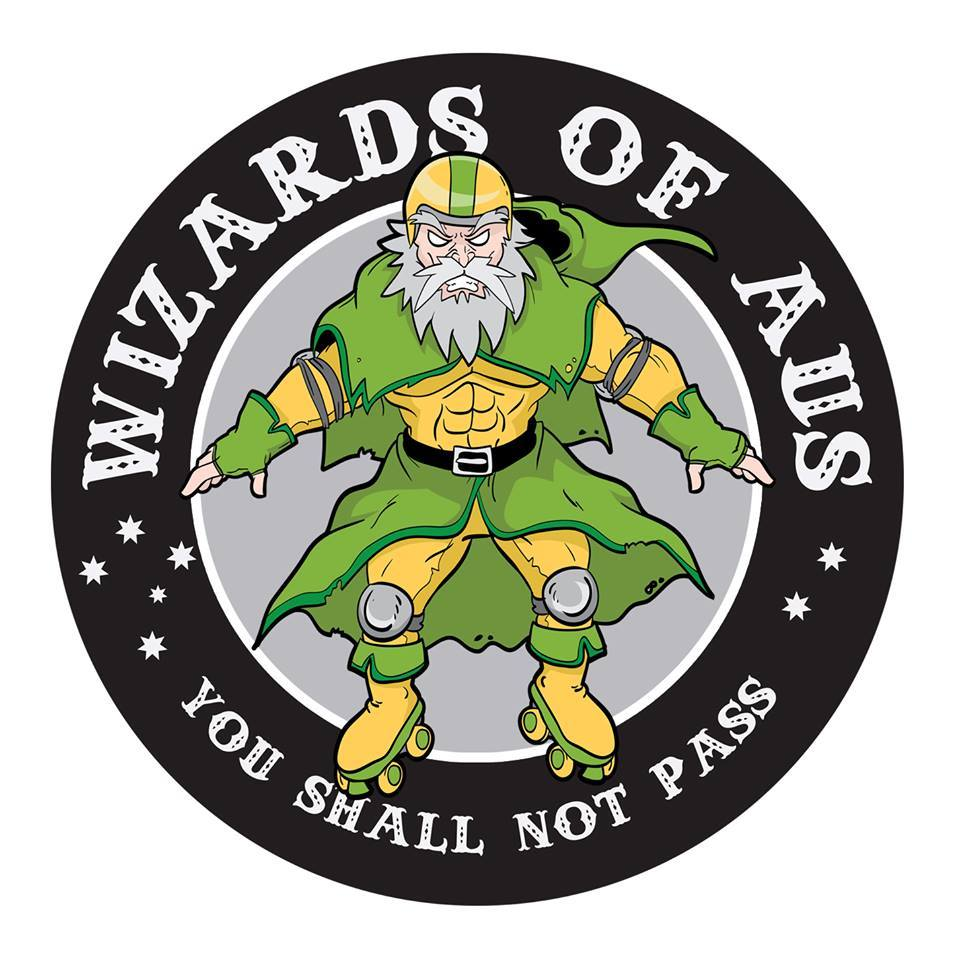

Next up in our coverage of the
Men's Roller Derby World Cup teams is one which needs no introduction, given their tour of Europe (including Scotland) before the last World Cup. It's Men's Australian National Team: the
Wizards of Aus!
 The Wizards of Aus logo, retained from 2014
In the
2014 World Cup, the Australian team was drawn in the same group as France, Germany and Ireland; defeating the latter two but losing to France placed them in the second of the two knockout places for that group. Despite being drawn against England in the first round of the tournament phase, Australia proceeded to pull out a convincing win against Argentina, and an incredibly tight (1point) win against Wales to take 5th place in the rankings.
This time, Australia is in Group Blue, with Belgium, France, Netherlands and Puerto Rico. Belgium and Netherlands finished in the lower half of the table last time around, but neither played Australia directly; France, of course, won their group last time; and Puerto Rico are the new team in the group. With just two teams from each group going through to the knockout with a chance at 1st place, it's likely that Australia will manage to fight for one of those spots - if Belgium and the Netherlands haven't upped their game in the last two years, of course!
Head Coach, and skater and coach at Angel City [ex of VRDL and Tiger Bay Brawlers], Tui Lyon was kind enough to answer some questions for us.
The Wizards of Aus selection is very strong this time around (and you've stolen Ballistic Whistle from the UK, even!). How did you go about recruiting and selecting such a strong team?
Men’s derby has grown so much in Australia since the last world cup, so the talent pool was so much deeper when selecting the squad this year. That’s actually my favorite thing about national teams, it’s an opportunity to share the best strategy, formations and skills with a whole bunch of skaters nation wide that normally would not have access to it. Especially true for men’s teams in Australia as none of them are traveling internationally to compete with their home teams or MRDA teams, so having the ability to collaborate with skaters and coaches that have is a really great skills share opportunity.
When selecting the squad I definitely was aware of a few Aussies living overseas that I wanted to see on the squad so I was thrilled when a few of them decided to try out for the team.
The Wizards of Aus did pretty well at the last MRDWC, placing 5th out of the field of 15, just ahead of Wales. What are your aims in performance this World Cup (considering that there's more teams playing - and the Women's National Team managed to hit an impressive 3rd place last time they competed!)?
Well obviously we are aiming gold, I think any team that approaches a competition like this must have that #1 spot in their mind; if you don’t believe you can take gold then it’s unlikely you actually will.
That being said the squad would be really happy if we came home to Australia with a medal of any color. The improvements that each individual has made since tryouts (which we had over a year ago) is incredible and I’ve most definitely seen how that has influenced each of their home teams, so for me as a coach and someone who wants to see the whole Australian derby community grow, we’re already winning.
And, what teams are you most looking forward to facing in the Cup - your group contains mostly European teams (Belgium, France and the Netherlands) along with unknowns Puerto Rico… (If you get the time between bouts, who are you most looking forward to seeing play, too?)
We are super excited to be in a pool with lots of Euro teams; European men’s derby is growing at a similar rate to Australia so we expect each of these teams to bring really strong showings with deep squads.
A rematch against France is definitely something I’ve heard the men talking about so I know there is some excitement around that match up. The French squad has some really strong and experienced MRDA players so think that match up will be very competitive, which is what we are heading to Calgary for.
I personally am really excited to see what Puerto Rico brings, I love to see the excitement and fresh enthusiasm that new teams bring to the competition.
While it's perhaps not quite as far as England, it's a long flight to Canada from Australia; how have you been fundraising and preparing for the trip?
Yeah it’s still a just as expensive trip to Canada for us as to the UK so fundraising is a big part of our preparation.
You can get all kinds of great prizes including merch and a fully customized official Wizards jersey! (We are happy to post internationally.) The squad has been doing a little coaching and things on the side to boost the coffers, but people’s donations are really our most important fundraising efforts.
This year, MRDWC are promoting the lead up to the Cup with the "Road to Calgary" tag. In the spirit of this, what bouts and training have you been doing since the last selection? (I think I saw you played against [WFRDA Top 3 team] Victorian Roller Derby League?)
We have already had one game against the VRDL All Stars and we have a re-match coming up in July just before Calgary. I’m really looking forward to this game as we will have almost our full squad in the one place, which we haven’t had the luxury of yet. VRDL will no doubt bring super tough competition as always so it will be a great match up.
We have had the luxury of training against VRDL quite a bit in our lead up to the World Cup, quite a few of our players get to scrimmage against them on a monthly basis so we’re pretty lucky in that regard.
We decided to form the squad really early for this World Cup so we have been training about 6 weekly for about a year now, I know our lead in time was a lot longer than many other teams so I think all the extra training means we will come together in Calgary as a formed team, not just a collection of talented individuals.
The Wizards of Aus'
first fixture in MRDWC 2016 will be against Belgium at 9am Track 2 on the Thursday (one of the two games which start the tournament), followed by the Netherlands at 11am on Track 1. [The official MRDWC schedule is located here:
http://mrdwc.com/schedule-2016/ ]
The Roster for 2016 is ( indicates skaters returning from the 2014 roster):
Skate Pilgrim 0
Fuzz 3
Sausarge Rolls 11 (Captain)
Skateslinger 1261
Ballistic Whistle 16
Copter 173
Mr Spew 1957 (Captain)
Rampage 311
Dirty 5 34
JS 39
Thorsome 42
Son of Skatin 505
Synaptic Kid 633
Justin Credible 75
Flamin' Galah 80
Kernel Panic 89
Greese Monkey 90
Coaches
Tui Lyon
Crack